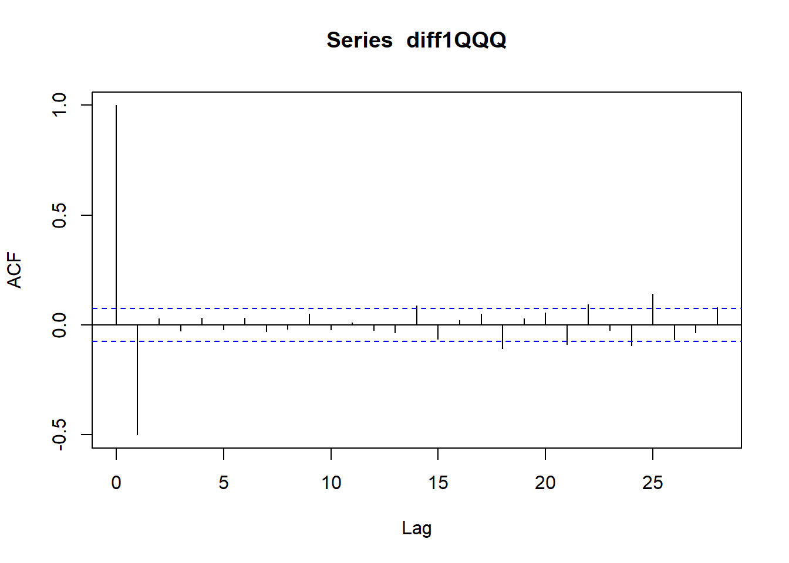
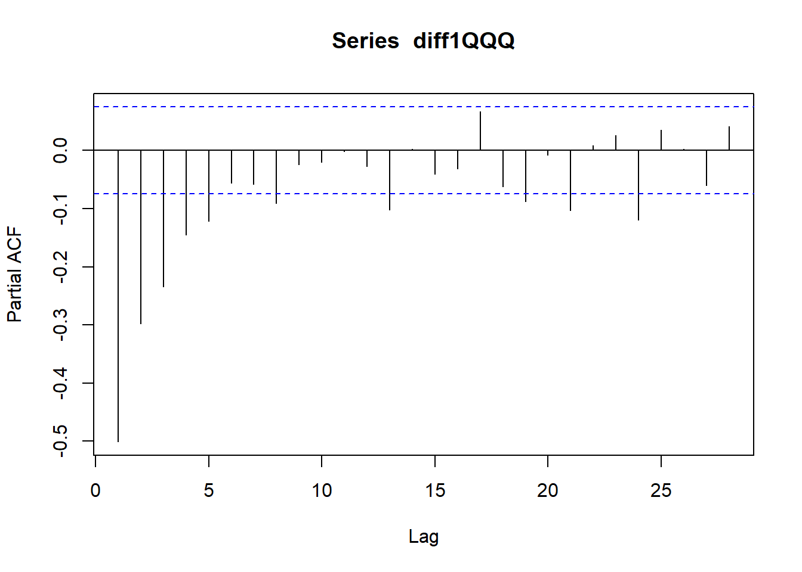

Code
library(tidyverse)
library(quantmod)
library(forecast)
library(tseries)Loading packages
Bringing the data into this tab as well:
spyIn <- quantmod::getSymbols("SPY", from = as.Date("2021/01/01"), to = as.Date("2023/09/30"), periodicity = "daily", src = "yahoo", auto.assign = FALSE)
qqqIn <- quantmod::getSymbols("QQQ", from = as.Date("2021/01/01"), to = as.Date("2023/09/30"), periodicity = "daily", src = "yahoo", auto.assign = FALSE)
iwmIn <- quantmod::getSymbols("IWM", from = as.Date("2021/01/01"), to = as.Date("2023/09/30"), periodicity = "daily", src = "yahoo", auto.assign = FALSE)
spyIn$spyRange <- (spyIn$SPY.High - spyIn$SPY.Low)/ spyIn$SPY.Open
qqqIn$qqqRange <- (qqqIn$QQQ.High - qqqIn$QQQ.Low)/ qqqIn$QQQ.Open
iwmIn$iwmRange <- (iwmIn$IWM.High - iwmIn$IWM.Low)/ iwmIn$IWM.Open
diff1SPY <- diff(spyIn$spyRange)
diff1QQQ <- diff(qqqIn$qqqRange)
diff1IWM <- diff(iwmIn$iwmRange)Based on previous results, and the fact that I am using “pseudo-differenced data” in that I am taking the percentage range in prices, in addition to a single differencing, means that the time series are stationary
Since I did some of this work with SPY data on the EDA tab, I will focus on QQQ range data here.


Based on these charts the order I would pick for QQQ is: ARIMA(2,1,0)
Call:
arima(x = diff1QQQ, order = c(2, 1, 0))
Coefficients:
ar1 ar2
-1.0035 -0.4832
s.e. 0.0334 0.0334
sigma^2 estimated as 0.0001131: log likelihood = 2149.08, aic = -4292.16
Training set error measures:
ME RMSE MAE MPE MAPE MASE
Training set 4.630039e-05 0.01062913 0.007805518 87.46782 258.6253 0.6398223
ACF1
Training set -0.1944037Equation is x = -1.0034x(t-1) - 0.4832x(t-2) + error
Model Diagnostic:
The Ljung Box statistics look cood, although the ACF of the residuals does have 1 significant term.
I originally tried a (4,1,2) model, however the ljung box statistics were highly correlated, and I suspected overfitting. After reducing the parametrization greatly, the new model performed mnuch better.
Series: diff1QQQ
ARIMA(1,0,1) with zero mean
Coefficients:
ar1 ma1
-0.0008 -0.8122
s.e. 0.0524 0.0361
sigma^2 = 5.483e-05: log likelihood = 2402.77
AIC=-4799.55 AICc=-4799.51 BIC=-4785.94
Training set error measures:
ME RMSE MAE MPE MAPE MASE
Training set -6.694728e-05 0.00739421 0.005455453 283.3672 549.0245 0.446905
ACF1
Training set 0.003755607The auto.arima method chose an ARIMA(1,0,1) model. However, this model did not perform as well in terms of AIC, with the Auto arima model having a score of -4799 while my model had a score of -4292.
Forecasting with auto arima model
Overall, my model has a slightly more dynamic prediction than the auto arima function, which quicly levels out to 0. However, my model also has a much wider uncertainty band.
Forecast method: Naive method
Model Information:
Call: naive(y = diff1QQQ, h = 1)
Residual sd: 0.0165
Error measures:
ME RMSE MAE MPE MAPE MASE ACF1
Training set 2.387746e-05 0.016488 0.01219951 309.6279 564.6879 1 -0.6746326
Forecasts:
Point Forecast Lo 80 Hi 80 Lo 95 Hi 95
691 -0.003168135 -0.02429836 0.01796209 -0.03548403 0.02914776
Forecast method: Seasonal naive method
Model Information:
Call: snaive(y = diff1QQQ, h = 1)
Residual sd: 0.0165
Error measures:
ME RMSE MAE MPE MAPE MASE ACF1
Training set 2.387746e-05 0.016488 0.01219951 309.6279 564.6879 1 -0.6746326
Forecasts:
Point Forecast Lo 80 Hi 80 Lo 95 Hi 95
691 -0.003168135 -0.02429836 0.01796209 -0.03548403 0.02914776
Call:
arima(x = diff1QQQ, order = c(2, 1, 0))
Coefficients:
ar1 ar2
-1.0035 -0.4832
s.e. 0.0334 0.0334
sigma^2 estimated as 0.0001131: log likelihood = 2149.08, aic = -4292.16
Training set error measures:
ME RMSE MAE MPE MAPE MASE
Training set 4.630039e-05 0.01062913 0.007805518 87.46782 258.6253 0.6398223
ACF1
Training set -0.1944037I fit a naive and seasonal naive model. On RMSE my model had the best performance, with 0.011, while the naive and snaive models had 0.017 rmse each (since there was no seasonal period I realized they were the same model). On MAE my arima model had 0.008 while the seasonal naive models had 0.0122.
Let’s compare forecasts:
Here, the naive method can only forecast 1 observation into the future, since the seasonal period is one. Which is an advantage to my model, but realistically means the naive model should be evaluated with cross validation.